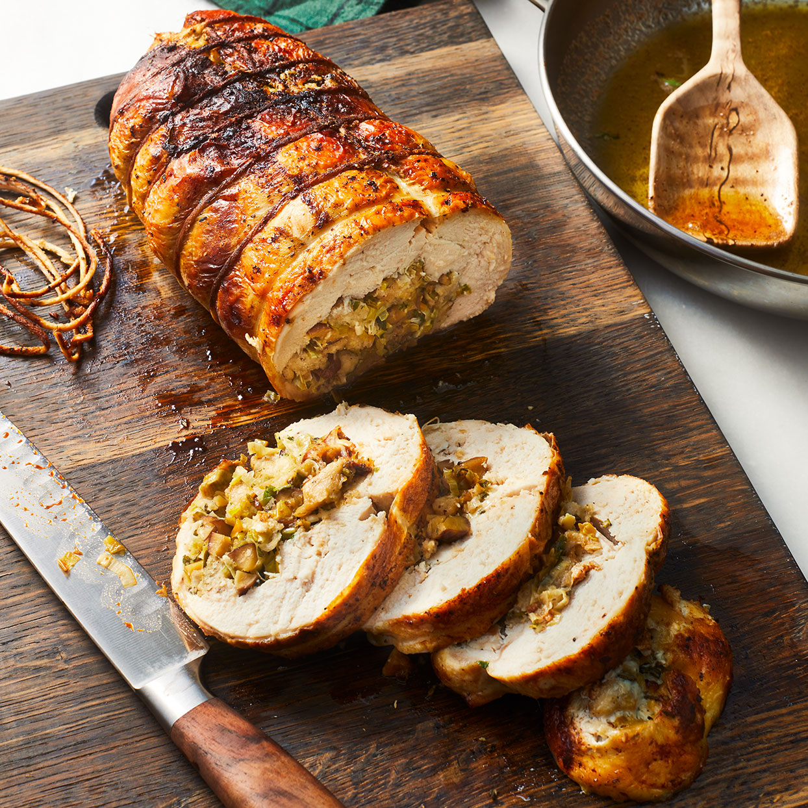

Chicken Ballontine

Description
This method of preparing and roasting a chicken allows for easy carving, excellent moisture retention
and a wide variety of flavour possibilities simply by changing the stuffing used. Once one perfects
the technique of deboning a whole bird, even the preparation is quick and easy. Every piece served
is guaranteed to be wrapped in perfectly crispy and delicious skin, which goes a long way towards
making sure the bird is perfectly moist when it comes out of the oven.
This recipe can be modified for use with any poultry, like Turkey or Duck by only changing the
stuffing to suit the flavour profile of the bird used. It is an excellent method for Christmas or
Thanksgiving dinner, with the bird being served with the stuffing already inside, ready for each
guest.
Ingredients
- 1 (4lb) Whole Chickens, boned out
- 2 tbsp Oil
- 1 glass dry sherry
- 1/4 lb button mushroom, sliced
For the Stuffing
- 1 oz butter
- 1 onion, finely chopped
- 3 oz ham, chopped
- 12 oz ground pork
- 1 cup fresh breadcrumbs
- 2 tsp parsley, chopped
- 1 tsp sage, chopped
- 1 glass dry sherry
- 1 egg, beaten
- 10 pistachio nuts, chopped
Saunce Ingredients
- 2 tbsp oil
- 1 tbsp carrot, finely diced
- 1 tbsp onion, finely diced
- 1/2 tbps celery, finely diced
- 1 tbsp flour
- 3/4 pint chicken stock
- 2 mushrooms, chopped
- 1 tsp tomato puree
- salt and pepper, to taste
Method
- Carefully debone the chicken, ensuring that the skin and as much of the meat as possible is
kept intact.
- Melt the butter in a pan and add the onion and cook till soft but not coloured. Remove from
the heat. Add the minced meats with the breadcrumbs and all the other stuffing ingredients.
- Stuff the bird and sew along the open edges with fine cotton. Tie with string round the bird
at 2" intervals. (Note: It is not strictly necessary to sew the bird closed.)
- Heat 2 tbsp oil in a rosting tin, set the bird on a grid and baste with the hot oil.
- Roast in oven at 200 degrees for 1.5 hours, basting every 20 minutes
To Prepare Sauce:
- Heat the oil in a pan, add the vegetables and cook till soft but not coloured. Stir in the
flour and reduce the heat, cook until a golden russet colour. Stir in two thirds of the chicken
stock, and the rest of the ingredients.
- Stir till boiling. Reduce the heat and cook at a slow simmer for 30 minutes. Add the rest of the
chicken stock and cook for five more minutes
- Fry the mushrooms in butter till soft.
- Remove the bird to a serving dish. Pour off the cooking fat and deglaze the tin with the sherry.
Strain and add the sauce with the cooked mushrooms.
- Pour a little sauce over the bird and serve.
- Cut the bird across the body not along it, that way the stuffing will be encased inside the meat
Back